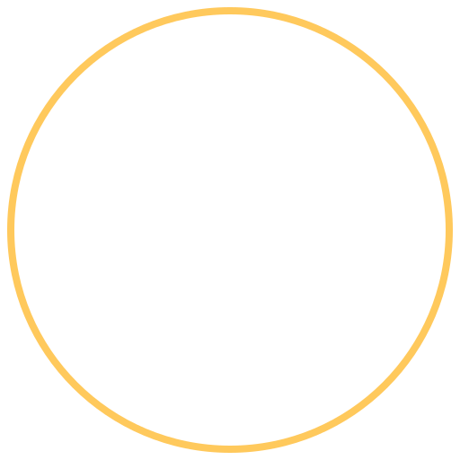

01
✦
Llamados para Triunfar
Inspiración y palabra para avanzar con fe hacia el propósito que Dios tiene para ti.
Motivación · Fe
RADIO NUEVA CELESTIAL104.5 FM · La voz de la esperanzaQue la música, la Palabra de Dios y los mensajes de esperanza acompañen cada momento de tu vida.
Donde estés, acompáñanos con una programación llena de bendición.
104.5 FM · Una voz de esperanza
Pulsa reproducir para escuchar la señal en vivo.
Espacios preparados con amor para fortalecer tu caminar con Dios.
Inspiración y palabra para avanzar con fe hacia el propósito que Dios tiene para ti.
Motivación · FeRecordemos juntos que en Cristo encontramos fuerzas para superar cada desafío.
Fortaleza · EsperanzaUna invitación a vivir nuestra fe con amor, servicio y buenas obras cada día.
Vida cristiana · ServicioUn tiempo especial para alabar, agradecer y levantar el corazón en adoración.
Alabanza · AdoraciónLa Palabra de Dios llegando a las familias para compartir paz, unión y esperanza.
Familia · BibliaLos horarios de cada programa pueden anunciarse próximamente por nuestros canales oficiales.
Todo lo puedo en Cristo que me fortalece.
Filipenses 4:13 · Reina-Valera 1960
Radio Nueva Celestial 104.5 FM quiere acompañarte con música cristiana, mensajes que edifican y la verdad de la Palabra de Dios.